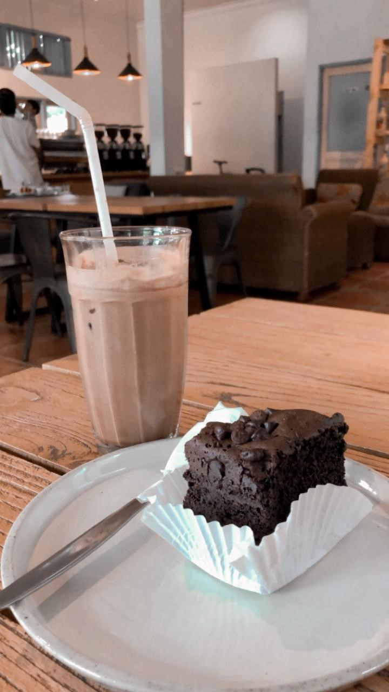
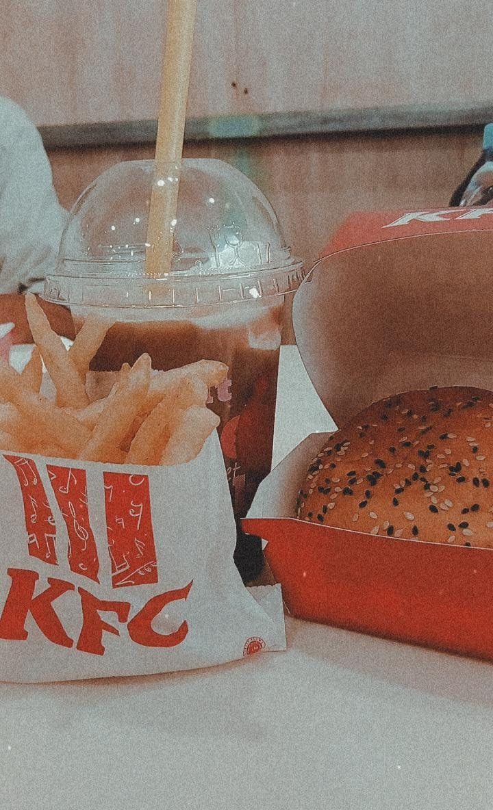
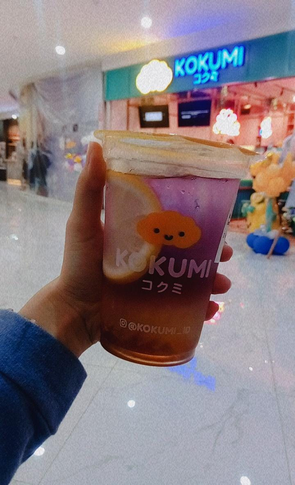
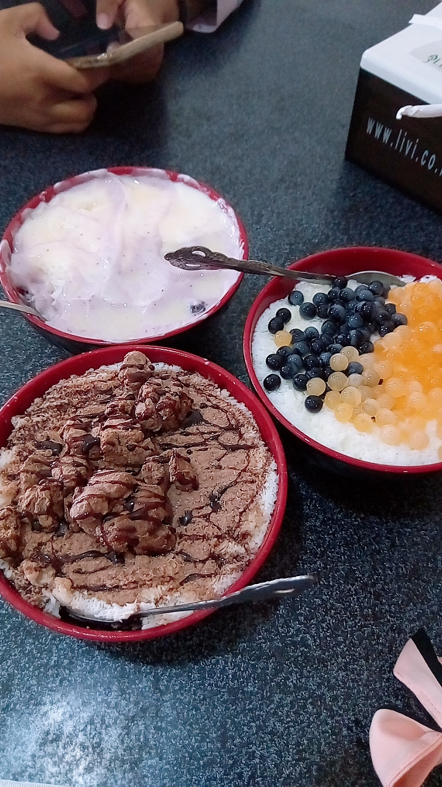

I always love having snacks and beverage after lunch but before dinner, that's the best time to have some of them. Usually, the weather is fine, not too hot and not too cold, that's why it's the best time! So, here is some my favourite snacks and beverages at Banjarmasin! Let's check it out!
I love brownies! Sometime brownies can be too sweets, but this brownies is the best! You can get this at A Thousand Feet cafe. Also don't forget to combine with Vanilla Coffee Latte. Best combo!!!

My comfort snacks is burger and french fries! Especially at KFC! I will have Zuper Krunch, Regular French Fries and Mocha Float. That's is enough to make me feel good. This trio is like my mood boosters!

Never wrong when you just randomly pick one at their menu because all the beverages that they have are great! My favourite one is Lemonade Stardust. It feel refreshing with a little hint of sour. Great to have when the weather is hot!

My favourite snack to calm down and just feel the softness of the ice. This one is the best! Just having one bowl of bingsoo you have a happy mood for a day!

That's all my favourite snacks and beverages for today. I wish this will be informative for you guys! Please wait for my next review and recommendation!